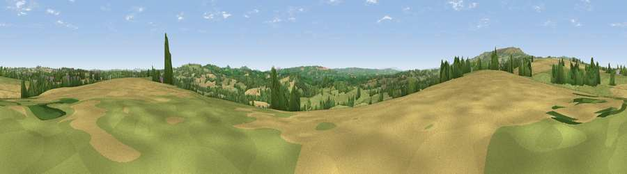

Viewpoint near Cleobury Mortimer
#20092 in England · top 49% of its area beats it · near Cleobury MortimerWhere it is
The exact computed spot (SO 66575 74625). Click the marker for map links.
The view, rendered

A 360° render of this exact spot computed from the terrain model, tree cover and land cover — summer colours, afternoon light, calibrated against photographs of famous viewpoints. Real trees, hedges and buildings will differ in detail.
The panorama
Grey silhouette: terrain skyline in each direction (720 bearings, Earth curvature and refraction included). Dashed green: skyline with trees (+15 m) and buildings (+8 m) as obstacles. Blue strip: how far the ground is visible on each bearing.
Where the view opens
Wedge length = distance to the farthest visible ground on that bearing (vegetation-aware). Rings at 10, 25 and 50 km.
What fills the view
56% grassland · 23% woodland · 20% cropland ·
Angular shares of the visible panorama (visual magnitude), not map area. Landscape diversity 0.44 (0–1 Shannon).
Key numbers
More beautiful places nearby
The staircase of upgrades: each row has a higher view potential than everything closer. Driving times are estimates from straight-line distance, calibrated against real road routing — check an actual route before setting out.
| Place | Direction | Drive | Score |
|---|---|---|---|
| Viewpoint near Cleobury Mortimer | NW · 2 km | ~5 min | 60.8 |
| Viewpoint near Bayton | ESE · 4 km | ~10 min | 67.5 |
| Magpie Hill | WNW · 6 km | ~13 min | 75.7 |
| Viewpoint near Cleeton | WNW · 7 km | ~15 min | 78.1 |
| Viewpoint near Cleehill | W · 8 km | ~15 min | 82.3 |
| Titterstone Clee | WNW · 8 km | ~16 min | 83.8 |
| The Lawley | NW · 29 km | ~45 min | 85.8 |
| North Hill | SSE · 30 km | ~47 min | 86.8 |
52.36865, -2.49234 · source: screening · position refined by local search. Computed location — check access rights before visiting.